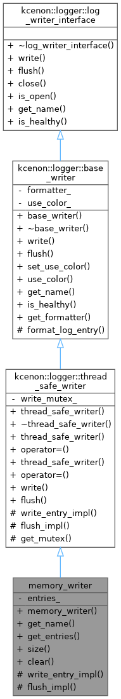
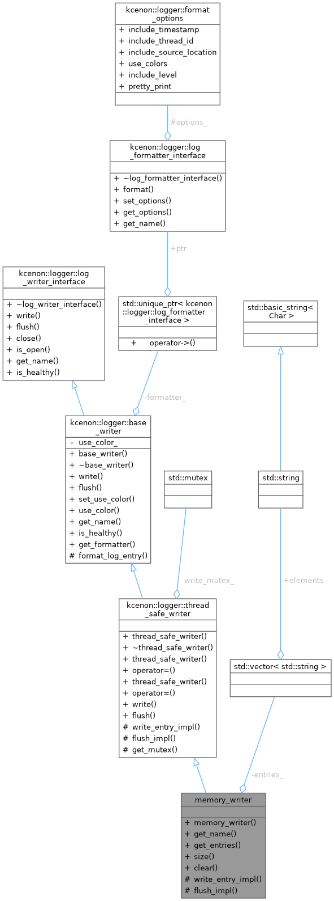
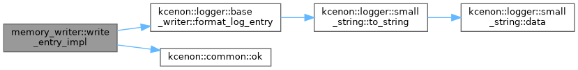

A custom writer that stores log entries in memory. More...


Public Member Functions | |
| memory_writer ()=default | |
| std::string | get_name () const override |
| std::vector< std::string > | get_entries () const |
| Get all stored log entries. | |
| size_t | size () const |
| Get count of stored entries. | |
| void | clear () |
| Clear all stored entries. | |
 Public Member Functions inherited from kcenon::logger::thread_safe_writer Public Member Functions inherited from kcenon::logger::thread_safe_writer | |
| thread_safe_writer (std::unique_ptr< log_formatter_interface > formatter=nullptr) | |
| Constructor with optional formatter. | |
| ~thread_safe_writer () override=default | |
| Virtual destructor. | |
| thread_safe_writer (const thread_safe_writer &)=delete | |
| thread_safe_writer & | operator= (const thread_safe_writer &)=delete |
| thread_safe_writer (thread_safe_writer &&)=delete | |
| thread_safe_writer & | operator= (thread_safe_writer &&)=delete |
| common::VoidResult | write (const log_entry &entry) final |
| Thread-safe write operation for structured log entries. | |
| common::VoidResult | flush () final |
| Thread-safe flush operation. | |
| Public Member Functions inherited from kcenon::logger::base_writer | |
| base_writer (std::unique_ptr< log_formatter_interface > formatter=nullptr) | |
| Constructor with optional formatter. | |
| virtual | ~base_writer ()=default |
| virtual void | set_use_color (bool use_color) |
| Set whether to use color output (if supported) | |
| bool | use_color () const |
| Get current color output setting. | |
| virtual bool | is_healthy () const override |
| Check if the writer is healthy and operational. | |
| log_formatter_interface * | get_formatter () const |
| Get the current formatter. | |
| Public Member Functions inherited from kcenon::logger::log_writer_interface | |
| virtual | ~log_writer_interface ()=default |
| virtual common::VoidResult | close () |
| Close the writer and release resources. | |
| virtual auto | is_open () const -> bool |
| Check if writer is open and ready. | |
Protected Member Functions | |
| kcenon::common::VoidResult | write_entry_impl (const log_entry &entry) override |
| Implementation of write operation. | |
| kcenon::common::VoidResult | flush_impl () override |
| Implementation of flush operation. | |
| Protected Member Functions inherited from kcenon::logger::thread_safe_writer | |
| std::mutex & | get_mutex () const |
| Access the writer mutex for extended operations. | |
| Protected Member Functions inherited from kcenon::logger::base_writer | |
| std::string | format_log_entry (const log_entry &entry) const |
| Format a log entry using the current formatter. | |
Private Attributes | |
| std::vector< std::string > | entries_ |
Detailed Description
A custom writer that stores log entries in memory.
This example writer demonstrates the thread_safe_writer pattern. Log entries are stored in a vector and can be retrieved later.
Benefits of using thread_safe_writer:
- No need to manage mutex manually
- write_impl() and flush_impl() are called while holding the lock
- Thread-safety is guaranteed by the base class
- Examples
- custom_writer_example.cpp.
Definition at line 44 of file custom_writer_example.cpp.
Constructor & Destructor Documentation
◆ memory_writer()
|
default |
- Examples
- custom_writer_example.cpp.
Member Function Documentation
◆ clear()
|
inline |
Clear all stored entries.
- Examples
- custom_writer_example.cpp.
Definition at line 75 of file custom_writer_example.cpp.
References entries_, and kcenon::logger::thread_safe_writer::get_mutex().
◆ flush_impl()
|
inlineoverrideprotectedvirtual |
Implementation of flush operation.
For a memory writer, flush is a no-op since data is already in memory. Called by thread_safe_writer::flush() while holding the mutex.
Implements kcenon::logger::thread_safe_writer.
- Examples
- custom_writer_example.cpp.
Definition at line 106 of file custom_writer_example.cpp.
References kcenon::common::ok().
◆ get_entries()
|
inline |
Get all stored log entries.
- Returns
- Vector of formatted log strings
Note: This method uses get_mutex() to ensure thread-safe access to the internal buffer when reading.
- Examples
- custom_writer_example.cpp.
Definition at line 59 of file custom_writer_example.cpp.
References entries_, and kcenon::logger::thread_safe_writer::get_mutex().
◆ get_name()
|
inlineoverridevirtual |
Implements kcenon::logger::base_writer.
- Examples
- custom_writer_example.cpp.
Definition at line 48 of file custom_writer_example.cpp.
◆ size()
|
inline |
Get count of stored entries.
- Examples
- custom_writer_example.cpp.
Definition at line 67 of file custom_writer_example.cpp.
References entries_, and kcenon::logger::thread_safe_writer::get_mutex().
◆ write_entry_impl()
|
inlineoverrideprotectedvirtual |
Implementation of write operation.
This method is called by thread_safe_writer::write() while holding the mutex. No need to acquire locks here - the base class handles synchronization.
- Warning
- Do not call public methods on 'this' inside *_impl methods as it would cause deadlock.
Implements kcenon::logger::thread_safe_writer.
- Examples
- custom_writer_example.cpp.
Definition at line 90 of file custom_writer_example.cpp.
References entries_, kcenon::logger::base_writer::format_log_entry(), and kcenon::common::ok().

Member Data Documentation
◆ entries_
|
private |
- Examples
- custom_writer_example.cpp.
Definition at line 112 of file custom_writer_example.cpp.
Referenced by clear(), get_entries(), size(), and write_entry_impl().
The documentation for this class was generated from the following file:
- examples/custom_writer_example.cpp